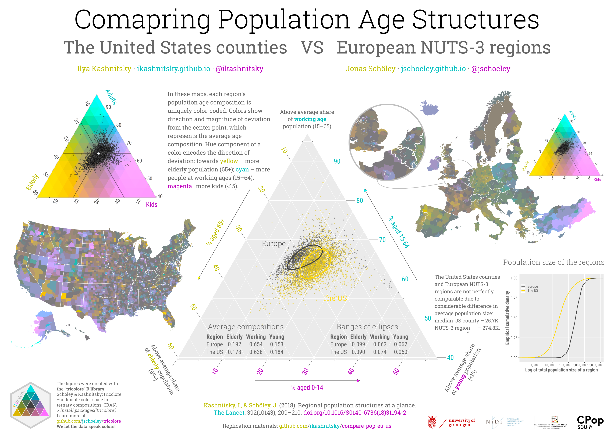
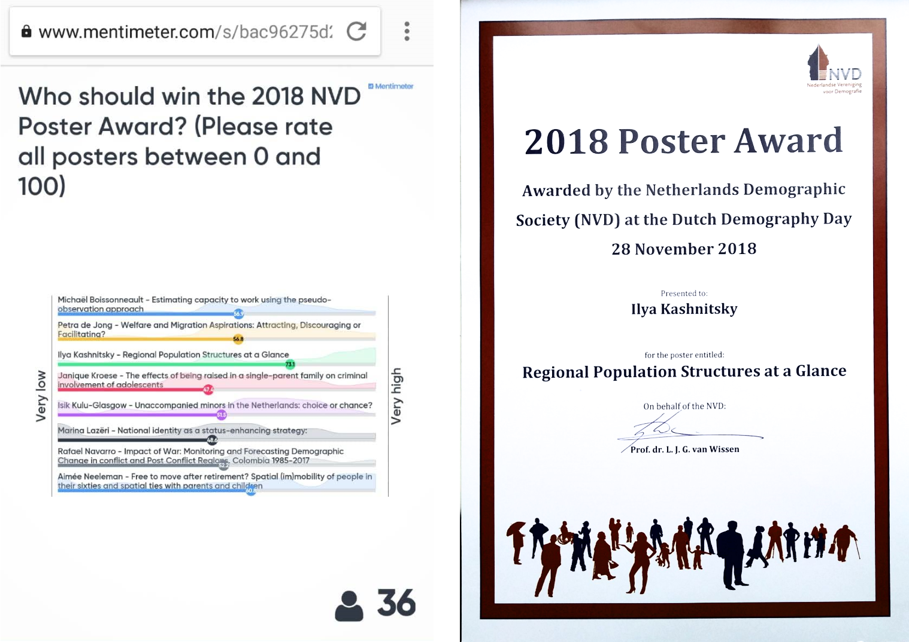

![]()
On 28 November 2018 I presented a poster at Dutch Demography Day in Utrecht. Here it is:

The poster compares population age structures, represented as ternary compositions in three broad age groups, of European NUTS-3 regions and the United States counties. I used ternary color-coding, a dataviz approach that Jonas Schöley and me recently brought to R in tricolore package.
In these maps, each region’s population age composition is uniquely color-coded. Colors show direction and magnitude of deviation from the center point, which represents the average age composition. Hue component of a color encodes the direction of deviation: towards yellow – more elderly population (65+); cyan – more people at working ages (15–64); magenta–more kids (<15).
Of course, NUTS-3 regions and the US counties are not perfect to compare; on average, NUTS-3 regions are roughly ten times bigger. That’s why the colors for European regions look quite muted, they are closer to the grey average composition.
The poster won NVD Poster Award via online voting of the conference participants.

This time I layouted the poster in Inkscape rather than arranging everything with hundreds of R code lines. But all the elements of the posted are reproducible with code from this github repo.
- Kashnitsky, I., & Schöley, J. (2018). Regional population structures at a glance. The Lancet, 392(10143), 209–210.
- My PhD project – Regional demographic convergence in Europe
- Paper (Schöley & Willekens 2017) with the initial ideas for tricolore package
- An example of ternary colorcoding used to visualize cause-of-death data